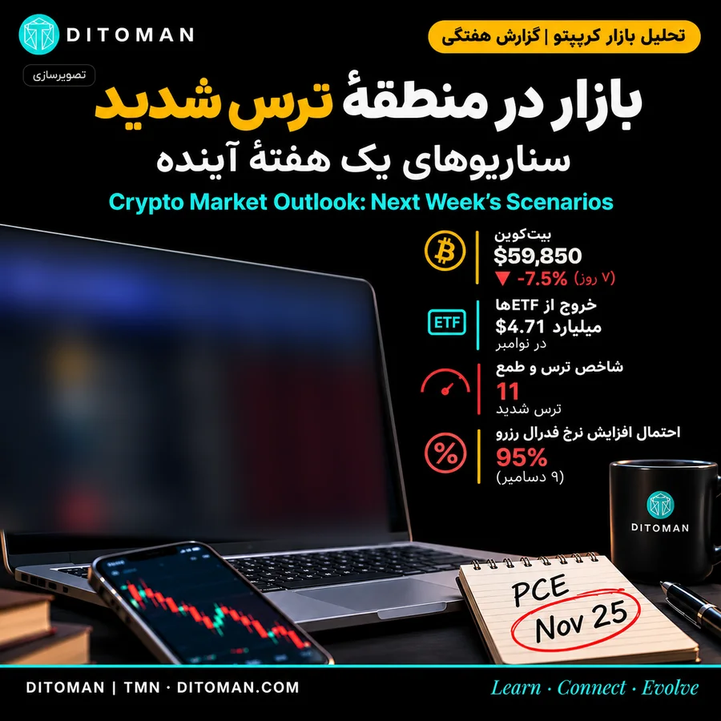

بازار در منطقهی ترس شدید
The market in extreme fear
بیتکوین، ETFها، شاخص ترس و طمع و سه سناریوی یک هفتهی آینده
Bitcoin, ETFs, the Fear and Greed Index and three scenarios for the week ahead
بیتکوین امروز ۳ آذر ۱۴۰۵ دوباره زیر ۶۰ هزار دلار رفت. دوشنبه یک خبر خوب بازار سهام را بالا برد، ولی کریپتو نتوانست آن را نگه دارد. این گزارش نمیگوید «بخر» یا «بفروش»؛ میگوید بازار الان کجاست، شاخصها چه معنایی دارند، سه سناریوی محتمل برای هفتهی پیش رو چیست و چه چیزی را باید دید.
در یک نگاه
- قیمت: حدود ۵۹٬۸۵۰ دلار؛ ۳٫۳٪ افت در ۲۴ ساعت، ۷٫۵٪ در هفته و ۲۳٫۵٪ در ماه
- ETFها: خروج ۵۷۰ میلیون دلار در روز دوشنبه، پنجمین روز پیاپی. جمع خروج نوامبر ۴٫۷۱ میلیارد دلار؛ بدترین ماه از زمان راهاندازی
- احساسات: شاخص ترس و طمع ۱۱؛ هشت روز پیاپی در «ترس شدید»
- فدرال رزرو: بازار احتمال افزایش نرخ بهره در ۹ دسامبر را حدود ۹۵٪ میداند
- رویداد کلیدی: چهارشنبه ۴ آذر (۲۵ نوامبر)، انتشار گزارش تورم PCE
1. بازار الان کجاست؟
دوشنبه:
خبر انویدیا سهام آمریکا را بالا برد (نزدیک ۶٫۵٪ برای Nasdaq) و بیتکوین تا حدود ۶۴٬۵۰۰ دلار رفت. ولی ظرف چند ساعت همهی آن را پس داد. وقتی یک خبر خوب در بازار نمیماند، یعنی فروشندهها هنوز دست بالا را دارند.
امروز:
گزارش WSJ از تعرفههای تازهی آمریکا علیه چین، ژاپن، کرهی جنوبی و چند کشور دیگر (شاید همین هفته) آمد. Nasdaq حدود ۲٪ افتاد و بیتکوین دوباره زیر ۶۰ هزار دلار رفت.
آلتکوینها ضعیفتر از بیتکویناند. در ۲۴ ساعت گذشته:
| ارز | تغییر |
|---|---|
| سولانا (SOL) | −۶٫۱٪ |
| اتریوم (ETH) | −۴٫۵٪ |
| هایپرلیکوئید (HYPE) | −۸٫۲٪ |
| آوالانچ (AVAX) | −۵٫۴٪ |
| ریپل (XRP) | −۴٫۲٪ |
CoinDesk و Invezz هم همین تصویر را گزارش کردهاند.
2. چهار شاخص را چطور بخوانیم؟
۱. جریان ETFها:
صندوقهای قابلمعاملهی بیتکوین راهی برای خرید بدون نگهداری مستقیماند. ورود پول یعنی خریدار نهادی؛ خروج یعنی برعکس. پنج روز خروج پیاپی نشان میدهد خریدار بزرگ فعلاً کنار ایستاده.
۲. شاخص ترس و طمع:
عددی بین ۰ تا ۱۰۰ که حالوهوای بازار را میسنجد. عدد ۱۱ یعنی ترس شدید. ترس شدید یعنی بازار احساسی شده، اما بهتنهایی نشانهی کف نیست؛ بازار میتواند مدتی در ترس بماند.
۳. قیمت تحققیافته (Realized Price):
میانگین قیمتی که همهی بیتکوینهای موجود آخرین بار در آن جابهجا شدهاند؛ یعنی تقریباً «میانگین قیمت خرید کل بازار». طبق Glassnode این عدد الان حدود ۵۳٬۲۰۰ دلار است. در بازارهای نزولی قبلی، کف معمولاً زیر همین سطح شکل گرفته. Glassnode نشانههای شروع تسلیم فروشندهها را میبیند، ولی اعلام کف نمیکند.
۴. فدرال رزرو و تورم:
وقتی نرخ بهره بالا میرود، داراییهای پرریسک معمولاً زیر فشار میروند. بازار افزایش ۹ دسامبر را حدود ۹۵٪ قطعی میداند و دلار در قویترین سطح خود از مارس ۲۰۲۵ است. گزارش PCE که چهارشنبه میآید، مهمترین عدد این هفته است.
3. سه سناریو برای هفتهی پیش رو
درصدها برآورد تحلیلی دیتومان است، نه محاسبهی دقیق و نه قطعیت.
۱. نوسان با تمایل به پایین (حدود ۵۵٪)
محدودهی تقریبی ۵۵ تا ۶۳ هزار دلار. پنجشنبه بازار آمریکا تعطیل (روز شکرگزاری) و جمعه نیمهوقت است؛ حرکتهای تند در هر دو جهت معنای زیادی ندارند.
۲. ادامهی ریزش (حدود ۳۰٪)
اگر قیمت روزانه زیر ۵۸٬۵۰۰ دلار ببندد، اول کف حدود ۵۵ هزار دوباره تست میشود. اگر آن هم بشکند، سطح بعدی همان قیمت تحققیافتهی حدود ۵۳٬۲۰۰ دلار است.
۳. برگشت (حدود ۱۵٪)
PCE ملایم بیاید و خروج از ETFها متوقف شود. تا وقتی قیمت روزانه بالای ۶۴٬۵۰۰ دلار (سقف دوشنبه) نبسته، هر صعودی فقط یک برگشت موقت است.
4. چه چیزهایی را باید دید؟
۱. چهارشنبه ۴ آذر (۲۵ نوامبر)، گزارش PCE اکتبر و بازنگری GDP.
برای PCE هسته حدود ۰٫۳٪ ماهانه انتظار میرود. ۰٫۴٪ یا بالاتر برای بازار بد است (بحث افزایش بزرگتر نرخ بهره جدی میشود) و ۰٫۲٪ یا کمتر خوب. این تحلیل هم همین دو را کلید هفته میداند.
۲. اعلام رسمی تعرفهها.
ممکن است همین هفته باشد و دوباره نوسان بیاورد.
۳. جریان روزانهی ETFها.
تا خروج پول متوقف نشود، برگشت پایدار قابلاتکا نیست.
تحلیل دیتومان
بازار کریپتو هر چرخه پایین و بالا دارد. ترس شدید برای کسی که سازوکار را میشناسد، بیشتر فرصتی برای یادگرفتن است تا دلیلی برای فرار: بفهم چرا ETFها مهماند، تورم چطور به قیمت میرسد و کف را چطور با داده میسنجند، نه با حس.
نکتهی ساده: هیچکس قیمت هفتهی آینده را قطعی نمیداند، و کسی که این را قبول دارد، با هر خبر از جا نمیپرد. تصمیم مالی هر کس به وضع و توان خودش بستگی دارد.
این گزارش تحلیلی و آموزشی است و توصیهی خرید، فروش یا سرمایهگذاری نیست. عددها از منابع زیر گرفته شدهاند و ممکن است تا انتشار تغییر کرده باشند.
بیشتر بخوانید
منابع
- CoinDesk: Bitcoin pulls back below $60,000 as tariffs re-enter the picture (24 Nov 2026)
- Invezz / TradingView: Why is Bitcoin down today?
- CoinTurk: ETF outflows surpass $4.7 billion in November
- FinanceFeeds: Crypto Fear and Greed hits 11
- Bitbo: Glassnode on Bitcoin capitulation
- KuCoin: Crypto Daily Market Report, 24 Nov
- Admiral Markets: PCE report 25 November preview
- BigGo Finance: PCE, GDP and a near-certain Fed hike
- Coinotag: 95.1% odds of a December Fed hike
- Forex Factory: U.S. prepares to raise tariffs on China and others (WSJ)
آخرین بازبینی: ۳ آذر ۱۴۰۵. عددها از منابع بالا گرفته شده و ممکن است تا انتشار تغییر کرده باشند. درصد سناریوها برآورد تحلیلی دیتومان است. این گزارش آموزشی و تحلیلی است و توصیهی خرید، فروش یا سرمایهگذاری نیست.